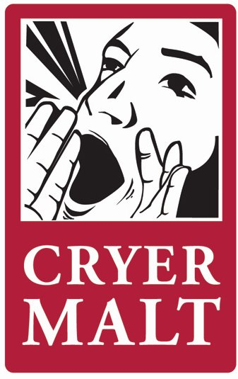
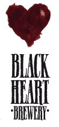
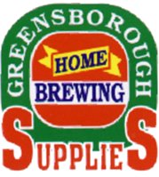
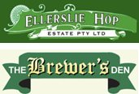

The Victorian Amateur Brewing Championships (Vicbrew 2012) will be held on 6th & 7th October 2012 at the Belgian Beer Café Eureka, 5 Riverside Quay, Southbank Melbourne. Melways reference: 2F E7 .
Placing (1st, 2nd or 3rd) in any category at Vicbrew 2012 qualifies entrant to submit an entry, in the same category, at AABC 2012 Melbourne.
Free Conference ticket for the Champion Brewer at each state qualifier
for AABC2012
The ANHC will award one free “Alpha-Amylase” ticket (Full Conference Package)
for the Champion Brewer at each state qualifier (ACT, NSW, QLD, SA, VIC, WA)
for the 2012 Australian Amateur Brewing Championship (AABC2012). If there are
entries from 10 or more brewers from TAS (judged at ACT qualifier) and/or NT
(judged at SA qualifier), then ANHC will also provide a free ticket to the Champion
Brewer from the state/territory that satisifes this criterion.
Conditions.
1. The state qualifying competition must have entries from 10 or more brewers
from that state.
2. The state Champion Brewers will be part of the awards ceremony at the Saturday
night Gala dinner at the end of the Conference.
3. If the Champion Brewer has already purchased their ticket, ANHC will refund their purchase price. No further free ticket will be awarded.
4. If the Champion Brewer is unable to attend ANHC, the ticket will be awarded to the highest placed runner-up Champion Brewer who is able to attend.
5. The free ticket will be issued by ANHC to the recipient and is not transferable.
6. If the Champion Brewers for a state has already been awarded a complimentary ticket from ANHC for some other reason, the ticket will be awarded to that state's next highest-placed Champion Brewer.
Online Entries:
Online Entry Registration is available for Vicbrew 2012 From
August 1st via compmaster http://www.compmaster.com.au
NOTE: Online entries will still need to be delivered to a Vicbrew 2012
collection centre by Saturday 22/09/2012
Entries may be submitted upto Saturday 22nd September 2012 at the following collection points:
Champion Beer of Show  |
Best Club of Show |
|
|
|
Vicbrew 2012
Entry Collection Points |
 Geelong Home Brewing Supplies
|
|
||
|  |
 |
Vicbrew 2012 Results in pdf format (Final)
Vicbrew
2012 Entry Form in pdf format (Final)
Categories and Styles list for
Vicbrew 2012
AABC 2012 Styleguides
in pdf format, one page per style, to be used at Vicbrew 2012.
AABC 2012Styleguides in pdf
format, condensed version.
Beer Judging Form to be
used at Vicbrew 2012
We hope to see you at Vicbrew 2012.